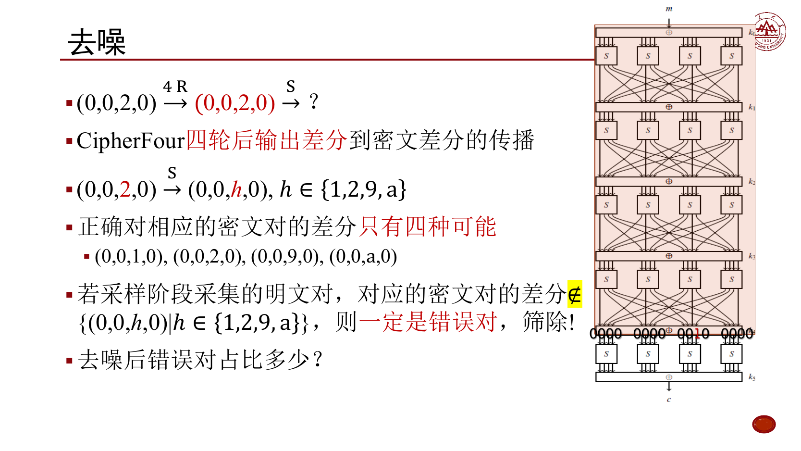
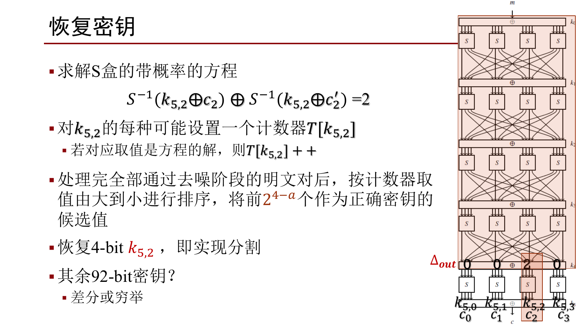

差分攻击¶
来源：
密码分析学 / notes/03-差分分析/差分攻击.md
差分分析思维导图¶
图中按“差分性质 → 传播与判据 → 密钥恢复”整理。先读本篇的普通差分，再分别复习截断差分、不可能差分、飞去来器与矩形攻击和差分—线性分析。
普通差分的目标是通过多次命中累计证据；不可能差分是在候选密钥下出现禁忌差分时排除候选。截断差分中的概率为 1 和概率小于 1 对应的判据也分别标在图中。
 如果是一轮算法，我们直接差分，就可以把k1消掉，实现对密钥空间的分割，用两个方程就可以分别求出密钥k0k,1
如果是一轮算法，我们直接差分，就可以把k1消掉，实现对密钥空间的分割，用两个方程就可以分别求出密钥k0k,1
这里面没有概率的问题，满足方程的可能是正确密钥，不满足的一定不是
对于两轮的情况
 我们可以消掉k2,然后这样就变成2的2n，但是还是比较大
我们可以消掉k2,然后这样就变成2的2n，但是还是比较大
 我们可以利用u到v的高概率差分，直接爆破k2，先把k2出来
由于这个是概率事件，所以满足方程和不满足的都可能是正确密钥
但是正确的密钥的概率比较大，错误的密钥就是随机置换
我们可以利用u到v的高概率差分，直接爆破k2，先把k2出来
由于这个是概率事件，所以满足方程和不满足的都可能是正确密钥
但是正确的密钥的概率比较大，错误的密钥就是随机置换
 这会导致不同的分布
我们就看对数T服从哪个分布，就能确定密钥是否正确了
三轮算法下
这会导致不同的分布
我们就看对数T服从哪个分布，就能确定密钥是否正确了
三轮算法下
 我们原先的一轮差分路线就不够用了，这样我们还是需要2的2n次方
我们原先的一轮差分路线就不够用了，这样我们还是需要2的2n次方
 我们需要找到两轮的差分
我们需要找到两轮的差分
核心思路：统计“出现得特别多”的差分¶
选择许多具有相同输入差分的明文对，寻找经过若干轮后出现概率明显高于随机置换的输出差分。把这个高概率差分当作区分器，再猜少量轮密钥、做局部逆运算，统计各候选密钥使目标差分出现的次数。正确候选预期得分较高，最后还要用额外明密文验证。
这里采用累计计数：命中目标差分就加分，未命中则保持计数；处理足够数据后，按分数筛选候选。不可能差分分析利用概率严格为零的差分，判据和计数方向完全不同。
1. 差分与随机基准¶
对两个输入 \(X,X'\)，定义异或差分 \(\Delta X=X\oplus X'\)。选择 \(P'=P\oplus\alpha\)，观察 \(r\) 轮后是否得到输出差分 \(\beta\)：
此式对固定密钥 \(K\)、变化的明文 \(P\) 而言。若用随机的 \(n\) 比特置换代替算法，固定非零 \(\alpha,\beta\) 时，平均命中概率为 \(1/(2^n-1)\)：不同输入对应不同输出，输出差分只能取 \(2^n-1\) 个非零值。攻击需要找到明显高于该基准的差分概率。
异或差分适合课件中的轮结构，因为相同轮密钥会在一对状态中抵消：
比特置换只重新排列差分的位置；非线性 S 盒使差分传播具有不均匀的概率。
2. 用 S 盒差分分布表找路线¶
对 \(m\) 比特输入的 S 盒，差分分布表（DDT）的表项为
每行计数之和为 \(2^m\)。CipherFour 的 S 盒是 4 比特的：表中 \(\texttt{2}\to\texttt{2}\) 的计数为 \(6\)，所以概率为 \(6/16\)；\(\texttt{F}\to\texttt{D}\) 的计数为 \(10\)，概率为 \(10/16\)。表项为零只说明该 S 盒的这一步传播不可能；普通差分攻击主要选用较大的非零表项。
手算一行 DDT¶
下面用一个 3 比特教学 S 盒演示如何计数：
| 输入 \(x\) | 0 | 1 | 2 | 3 | 4 | 5 | 6 | 7 |
|---|---|---|---|---|---|---|---|---|
| \(S(x)\) | 0 | 1 | 3 | 6 | 7 | 4 | 5 | 2 |
固定输入差分 \(a=1\)，依次取 \(x=0,1,\ldots,7\)，先算配对输入 \(x\oplus1\)，再算 \(b=S(x)\oplus S(x\oplus1)\)：
| \(x\) | 0 | 1 | 2 | 3 | 4 | 5 | 6 | 7 |
|---|---|---|---|---|---|---|---|---|
| \(x\oplus1\) | 1 | 0 | 3 | 2 | 5 | 4 | 7 | 6 |
| 输出差分 \(b\) | 1 | 1 | 5 | 5 | 3 | 3 | 7 | 7 |
输出差分 \(5\) 出现两次，所以 \(N_S(1,5)=2\)，对应概率 \(2/8=1/4\)。DDT 按所有输入 \(x\) 计数：\((2,3)\) 和 \((3,2)\) 是同一个无序输入对的两个方向，因此各算一次。
构造完整 DDT 时，对每个输入差分 \(a\) 都重复这个过程。读取表格时先确定行 \(a\) 和列 \(b\)，再用该计数除以 \(2^m\)，才能得到传播概率。

图源：第 3.1 节《差分分析-1》，第 30 页。
一条差分路线（差分特征）指定每一轮边界的差分，如 \(\alpha\to\delta_1\to\delta_2\to\beta\)。在课件采用的轮密钥独立、传播近似独立的模型下，路线概率为各轮活跃 S 盒传播概率的乘积。活跃 S 盒越多，乘积通常降得越快，因此找路线时要同时考虑 DDT 和比特置换。
一个 \(r\) 轮差分只固定头尾 \(\alpha\to\beta\)，不限制中间经过哪条路线。同一头尾差分的概率，是各条互不重叠的中间差分路线概率之和。
迭代差分：让同一种差分在轮边界重复出现¶
如果一条经过 \(r\) 轮的差分路线以 \(\alpha\) 为输入，又回到相同差分 \(\alpha\)，就称它为 \(r\) 轮迭代差分路线：
这使路线可以重复连接。例如课件中的 CipherFour 一轮存在
其活跃 S 盒的差分 \(\mathtt 2\to\mathtt 2\) 的概率为 \(6/16\)；后续比特置换使差分仍落在同一位置。重复两次就得到
在课件的独立轮密钥和差分传播近似模型下，这条两轮路线的概率为 \((6/16)^2\)；同样重复四次得到一条概率约为 \((6/16)^4\) 的四轮路线。重复利用同一个短路线，减少了构造长路线时要寻找的不同连接条件。
相乘得到的是这条指定的迭代路线的概率。同一头尾差分还可能通过其他中间差分路线出现；总体差分概率应把这些互不重叠的路线贡献加起来。搜索时可以先利用 DDT 找高概率单轮传播，再检查线性层输出是否能回到输入差分，最后验证多轮统计结果。
CipherFour 四轮例子¶
取 \(\alpha=\beta=(0,0,2,0)\)。课件找到至少四条不同路线，每条在上述近似下的概率都是 \((6/16)^4\approx0.0198\)，因此
对随机 16 比特置换，指定非零输出差分的基准约为 \(1/(2^{16}-1)\)。这就是四轮差分的非随机信号；实验测得的频率也在 \(0.08\) 附近。

图源：第 3.1 节《差分分析-2》，第 32 页；截取四条路线。
3. 利用四轮差分攻击五轮 CipherFour¶
课件采用“4+1”：四轮区分器放在前面，末轮用于恢复局部子密钥。CipherFour 每轮处理四个 4 比特半字节；四轮后目标差分是 \((0,0,2,0)\)，所以末轮只需重点检查第 3 个半字节（下标 \(2\)）的白化密钥 \(k_{5,2}\)，共 4 比特。

图源：第 3.1 节《差分分析-3》，第 2 页；截取轮结构。
采样：选明文对¶
选择 \(m\) 个明文 \(P_i\)，令 \(P'_i=P_i\oplus(0,0,2,0)\)，查询两者的五轮密文 \(C_i,C'_i\)。每对都满足区分器的输入要求，但四轮后只有约 \(0.08m\) 对预计满足目标输出差分；内部状态无法直接看到。
预筛：去掉显然无用的密文对¶
 输入差分我们可以控制，但是最后输出的中间状态差分我们没办法控制，如果他满足0020，我们叫他正确对，否则就叫他错误对，正确对+正确密钥肯定是能得到正确差分，错误对+正确密钥得不到正确差分，但是吧，我们这个方程，只考虑哪个活跃的S盒，那它虽然得不到0020,但是可能的代ab2c，只要那个2是对的，那错误对加正确密钥也是可以满足这个方程的，然后错误的密钥的话，那就随机了
输入差分我们可以控制，但是最后输出的中间状态差分我们没办法控制，如果他满足0020，我们叫他正确对，否则就叫他错误对，正确对+正确密钥肯定是能得到正确差分，错误对+正确密钥得不到正确差分，但是吧，我们这个方程，只考虑哪个活跃的S盒，那它虽然得不到0020,但是可能的代ab2c，只要那个2是对的，那错误对加正确密钥也是可以满足这个方程的，然后错误的密钥的话，那就随机了
若四轮后的差分真是 \((0,0,2,0)\)，末轮 S 盒的 DDT 要求密文差分属于
 不在00h0里的肯定是错误对，但是你h倒退回去未必是2
不满足的对直接丢弃。预筛保留满足密文差分模式的对，其中混有错误对。课件实验中约 \(11\%\) 的采样对通过，预筛因此减少了后续计数的噪声。
不在00h0里的肯定是错误对，但是你h倒退回去未必是2
不满足的对直接丢弃。预筛保留满足密文差分模式的对，其中混有错误对。课件实验中约 \(11\%\) 的采样对通过，预筛因此减少了后续计数的噪声。
课件例题：四种密文差分从哪里来？¶

图源：《第3.1节 差分分析-3》，第 10 页。以下使用课件例题的 CipherFour S 盒。
第一步，确定正确对。 明文对满足 \(\Delta P=(0,0,2,0)\)；如果它在第 4 轮结束时的内部差分也是
就叫正确对。四轮后不是这个差分的叫错误对。内部状态 \(X_4\) 不能直接看到，我们只能利用密文进一步筛选。
第二步，追踪末轮 S 盒。 本例末轮是并行 S 盒加末尾密钥异或，没有末轮 P 置换。同一轮密钥异或在差分中抵消，四个半字节的输出差分仍按相应 S 盒分别计算。
输入差分为 0 的三个位置，两个 S 盒输入相同，因此输出差分都是 0。活跃位置输入差分为 \(\mathtt2\)；查课件的 DDT 第 2 行：
| 输出差分 \(h\) | \(\mathtt1\) | \(\mathtt2\) | \(\mathtt9\) | \(\mathtt A\) |
|---|---|---|---|---|
| DDT 计数 | 6 | 6 | 2 | 2 |
| 概率 | \(6/16\) | \(6/16\) | \(2/16\) | \(2/16\) |
四项计数合计 16，说明输入差分为 \(\mathtt2\) 时，S 盒输出差分只有这四种可能。因此
这里 \(\mathtt A\) 是十六进制 10，四个位置按从左到右的半字节书写。例如 \(\Delta C=\mathtt{0090}\) 通过；\(\mathtt{0030}\) 的活跃位置不是四种允许值，直接丢弃；\(\mathtt{1020}\) 的第一个半字节非零，也直接丢弃。
第三步，理解“通过”和“正确”的关系。 每个正确对都通过筛选，因此不通过的对一定是错误对；通过的对只是可能正确。比如课件 DDT 中输入差分 \(\mathtt4\) 也可能产生输出差分 \(\mathtt9\)，所以从局部 S 盒传播看，输出 \(\mathtt9\) 并不能唯一确定输入差分是 \(\mathtt2\)。还要猜末轮子密钥、逆过 S 盒并统计，才能继续筛选。
去噪后错误对占多少？¶
记采样对数为 \(m\)，四轮目标差分的概率估计为 \(p\approx0.08\)，经过密文筛选的比例为 \(\epsilon\)。所有正确对都保留，因此
课件对多个密钥测试后，平均每 \(2^{16}\) 个有序采样对保留约 7387 对；以 \(p\approx0.08\) 估算正确对数：
所以这次去噪让正确对占比从约 \(8\%\) 提高到约 \(71\%\)，去噪后仍有约 \(29\%\) 是错误对。课件的 7387 是多组密钥的平均保留数；5243 是用 \(p\approx0.08\) 估算的正确对数，并非每组密钥都恰好测得该数。
课件还用随机 16 比特置换作基准：固定非零输入差分后，四种目标密文差分的概率为 \(4/(2^{16}-1)\approx2^{-14}\)；\(2^{16}\) 个有序对对应期望约 4 个通过。它是随机置换基准，不是本例去噪后错误对的 \(29\%\)。将有序对去重后，各计数减半，比例不变。
计数：猜末轮 4 比特子密钥¶
对每个保留的密文对和每个候选 \(\kappa\in\{0,\ldots,15\}\)，检查
若成立，就给 \(T[\kappa]\) 加一。因为末轮 S 盒之前的密钥异或不改变差分，正确的 \(k_{5,2}\) 会让真正满足四轮差分的明文对命中方程。处理全部数据后，按 \(T[\kappa]\) 排序，再用更多明密文验证高分候选，排除偶然命中的错误密钥。
课件例题：末轮子密钥如何恢复？¶

图源：《第3.1节 差分分析-3》，第 13 页。这里接着上面的四轮差分与去噪结果。
目标：只猜第 3 个半字节的末尾白化密钥 \(k_{5,2}\)。它有 4 比特，共有 \(2^4=16\) 个候选 \(\kappa\in\{\mathtt0,\ldots,\mathtt F\}\)。最后一轮没有 P 置换，所以该密文字节位置只需要这 4 位密钥就能逆过 S 盒。
为什么先异或密钥再逆 S 盒？ 记第四轮输出第 3 个半字节为 \(X_{4,2}\)，末轮 S 盒前后还有密钥异或，则
给定末尾密钥猜测 \(\kappa\)，按照加密的相反顺序处理密文：
对另一条密文做同样计算，再异或两个结果。若猜测正确，相同的 \(k_{4,2}\) 被抵消，因此
正确对的第 4 轮输出差分为 \((0,0,2,0)\)，因此课件使用的检验方程就是
为什么只猜 \(k_{5,2}\)，不用猜 \(k_{4,2}\)？ \(k_{5,2}\) 在末轮 S 盒之后，需要猜它才能把密文送进逆 S 盒；\(k_{4,2}\) 在 S 盒之前，正确逆运算后对两边作异或时自动抵消。
一个密文对怎样给候选计数？¶
- 设置 16 个计数器 \(T[\mathtt0],\ldots,T[\mathtt F]\)，初值全为 0。
- 对一个通过去噪的密文对，取其第 3 个半字节 \(C_2,C'_2\)。
- 依次代入 16 个 \(\kappa\)；方程成立时令 \(T[\kappa]\leftarrow T[\kappa]+1\)。
- 对每个保留密文对重复，最后按计数由大到小排列。
例如某对的 \(C_2=\mathtt3\)、\(C'_2=\mathtt2\)，密文差分是 \(\mathtt1\)，通过末轮活跃位置的去噪条件。对每个猜测检验
课件的 S 盒从输入 \(\mathtt0\) 到 \(\mathtt F\) 依次为 6 4 C 5 0 7 2 E 1 F 3 D 8 A 9 B。按逆表代入，三个候选例如：
| \(\kappa\) | \(S^{-1}(\mathtt3\oplus\kappa)\) | \(S^{-1}(\mathtt2\oplus\kappa)\) | 异或结果 | 操作 |
|---|---|---|---|---|
| \(\mathtt0\) | \(\mathtt A\) | \(\mathtt6\) | \(\mathtt C\) | 不加分 |
| \(\mathtt6\) | \(\mathtt3\) | \(\mathtt1\) | \(\mathtt2\) | \(T[\mathtt6]\) 加 1 |
| \(\mathtt7\) | \(\mathtt1\) | \(\mathtt3\) | \(\mathtt2\) | \(T[\mathtt7]\) 加 1 |
枚举 16 个候选，全部解为 \(\{\mathtt6,\mathtt7,\mathtt8,\mathtt9,\mathtt A,\mathtt B\}\)，共 6 个，与课件 DDT 中 \(\mathtt2\to\mathtt1\) 的计数一致。这一个密文对会给 6 个计数器各加 1；不同密文对提供不同的候选集合，累计后用于排序。这里演示的是一个局部方程的求解。
对一个保留对，若密文活跃半字节差分分别是 \(\mathtt1,\mathtt2,\mathtt9,\mathtt A\)，课件 DDT 对应的方程解数分别为 \(6,6,2,2\)。课件把四种情况等权平均，得到 \(\eta=(6+6+2+2)/4=4\)；实际保留对的四种差分出现频率不同时，平均解数应按其实际频率加权。
为什么计数高的候选更值得检查？¶
本例采用上节的完整去噪条件：三个非活跃密文半字节的差分均为 0，活跃半字节差分属于 \(\{1,2,9,\mathtt A\}\)。当 \(\kappa\) 是正确的 \(k_{5,2}\) 时，逆 S 盒方程的左侧就是真实的第 4 轮活跃位置差分：
- 正确对的真实差分为 \(\mathtt2\)，一定给正确密钥计数器加 1。
- 通过完整去噪后，其他三个位置的真实差分为 0；因此错误对的活跃位置差分不能是 \(\mathtt2\)，不会给正确密钥计数器加分。
- 对错误密钥猜测，部分解密结果只是候选值，正确对或错误对都可能让方程偶然成立，产生其他计数。
大量对累计后，正确候选得到正确对提供的信号，错误候选也会得到偶然命中的计数。因此按计数排序，保留高分候选，再验证。
前 \(2^{4-a}\) 个候选是什么意思？¶
16 个候选按照 \(T[\kappa]\) 降序排列。课件用 \(a\) 表示期望的排序优势：把候选数量从 \(2^4\) 减少到 \(2^{4-a}\)，再继续验证。例如：
| 优势 \(a\) | 保留候选数 \(2^{4-a}\) | 含义 |
|---|---|---|
| 1 | 8 | 16 个候选中保留前 8 个 |
| 2 | 4 | 保留前 4 个 |
| 3 | 2 | 保留前 2 个 |
| 4 | 1 | 只保留第 1 个 |
这里 \(a\) 是候选规模缩减了多少比特，具体取多大要结合数据量、排序成功率和后续验证成本。保留多个候选时，应逐一进行后续验证。
课件的“其余 92 位密钥”¶
课件将 \(k_0,\ldots,k_5\) 六个 16 位轮密钥作为独立未知量，共 \(6\times16=96\) 位；如果已确定 \(k_{5,2}\) 的 4 位，就还剩 \(96-4=92\) 位，可继续使用差分分析或穷举。若排序后保留 \(2^{4-a}\) 个该半字节候选，直接搭配剩余独立 92 位枚举的规模约为 \(2^{4-a}\cdot2^{92}=2^{96-a}\)。具体算法有密钥编排关系时，应按实际独立密钥位数计算。
课件用信噪比粗估排序效果：若目标差分概率为 \(p\)，预筛保留比例为 \(\epsilon\)，每个保留对平均给 \(\eta\) 个候选加分，\(2^k\) 个计数器的平均噪声约为 \(m\epsilon\eta/2^k\)，真正符合四轮差分的信号贡献约为 \(mp\)。本例 \(p\approx0.08\)、\(\epsilon\approx0.11\)、\(\eta\approx4\)、\(k=4\)，信噪比约为 \(0.08\times16/(0.11\times4)\approx2.9\)。这是近似指标，实际成功率还取决于样本数及相关性。
这里只恢复了末轮白化密钥中的 4 比特，仍需恢复其余密钥。若不复用明文，采样约需 \(2m\) 次选择明文查询；时间还要计算预筛和局部逆运算。
与不可能差分的关键区别¶
| 普通差分攻击 | 不可能差分分析 | |
|---|---|---|
| 利用的事件 | 指定头尾差分出现得偏多，概率明显高于随机基准 | 指定头尾差分绝不出现，\(p=0\) |
| 候选密钥满足检验时 | 给候选加分，多对累计后排序 | 触发禁忌矛盾，删除候选 |
| 候选密钥未满足检验时 | 保持计数，继续统计其他数据对 | 保留候选，继续检查其他数据对 |
相关笔记：攻击思想、截断差分、飞去来器攻击、不可能差分分析。
从实验理解差分攻击¶
实验二：差分路径与密钥恢复 将 DDT、路线概率求和、固定密钥频率、末轮去噪与候选计数串成完整实例，并解释了 0x8 与 0x9 为什么严格同分，以及有序配对为何没有把实际明文数翻倍。